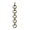
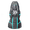
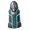
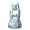
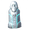

地下圣堂
本站支持中英文站内搜索。带 ↗ 的链接指向外部网站；各页来源版本见页脚。

地下圣堂是泥泞沼泽中的地下城。须用古树长老掉落的沼泽密钥解锁入口铁门才能进入。沼泽钥匙使用后不会消耗。
墓室似乎在泥泞沼泽中的随机地点以四个一组生成，组内各墓室只有位于泥泞沼泽足够深处才会出现。
说明
墓室有多个房间，被泥泞的废料堆隔开，可用任意镐击开采，获得铁碎屑、皮革碎片和枯骨。部分房间由未上锁的铁门隔开，破坏不返还铁或其他资源，只会浪费耐久度。
部分房间有概率出现地下圣堂箱子、尸堆及标记下一首领邪骨恶灵位置的符文石。
附近房间有尸堆时，常能听到苍蝇般的嗡嗡声。可在阻路的泥泞的废料堆中挖出只够射击、不够尸鬼通过的缝，刷尸鬼和尸鬼精英。也可用鹿角战锤或铁大锤等需要2只手持握的锤，其范围伤害能穿透泥泞废料堆，而不破坏废料堆，伤害后面的尸鬼及尸堆。
战利品
| 数额 | 物品 | 机率( 百分比)宝箱 |
|---|---|---|
| 10-20 | 68.3% | |
| 1-3 | 43.5% | |
| 10-15 | 毒箭 | 43.5% |
| 10-15 | 铁头箭 | 43.5% |
| 20-60 | 43.5% | |
| 1-3 |  锁链 |
43.5% |
| 20-30 | 43.5% | |
| 1-3 | 43.5% | |
| 1-5 | 43.5% | |
| 1 | 24.3% | |
| 1 |  铁制防护神像 |
5.28% |
| 1 |  铁制战斗神像 |
2.66% |
| 1 |  银 防护 神像 |
0.537% |
| 1 |  银 战斗 神像 |
0.537% |
说明
- 地下圣堂会生成有毒软泥怪，建议带抗毒蜜酒或树根面罩。
- 地下圣堂比诡秘墓穴明亮，但暗房里仍可使用火炬或矮人头环。
- 尸鬼偶尔会生成在泥泞废料堆内部，从里面攻击附近玩家，挖开后才露出。
- 在地下圣堂绿色火把附近攻击时要小心，击中可能永久摧毁它们。
- 虽然内部潮湿、墙上有水流，地下圣堂仍算作 庇护 ，不会造成 潮湿 减益，除非被迫在积水走廊游泳。
- 若泥泞废料堆部分穿出墙外，掉落物可能生成在地下圣堂外面，卡在外部或落回沼泽，因为地牢实际位于世界上方很高处。
- 清理后，留意墓室周围的铁碎屑、皮碎片及枯骨。
图片库
-
绿色的地下圣堂
-
准备就绪待打开
- 在泥泞废料堆挖出缝，射击相邻房间尸堆生成的尸鬼。


| 生物群系 | |||||||||||||||||||
|---|---|---|---|---|---|---|---|---|---|---|---|---|---|---|---|---|---|---|---|
| 重要 地点 |
| ||||||||||||||||||
| 资源 采集点 |
| ||||||||||||||||||
Sunken Crypts are dungeons found in Swamps. They can only be accessed by unlocking the iron gate to the entrance by using the Swamp Key dropped by The Elder. The Swamp Key is NOT consumed upon use.
Crypts appear to generate in clusters of four at random points within the Swamp, and any crypts within that cluster will only generate if deep enough into the Swamp.
Description
These crypts are composed of multiple rooms separated by Muddy Scrap Piles, which can be mined with any pickaxe for Scrap Iron, Leather Scraps and Withered Bones. Some rooms may be separated by an unlocked Iron Gate. Destroying this gate does not return any iron or other resources and is just a waste of durability.
Certain rooms also have a chance to contain Sunken Crypt chests, Body Piles and Runestones that show the location of the next boss, Bonemass.
The presence of Body Piles in a nearby room is usually indicated by a noise like the buzzing of flies. These provide excellent opportunities to farm Draugr and Draugr Elite if a gap large enough to shoot through, but not large enough for the Draugr to pass, can be opened in the Muddy Scrap Piles that block access to them. Alternately, the AoE effect from 2-handed maces such as the Stagbreaker or Iron Sledge will penetrate Muddy Scrap Piles without destroying them, and injure or destroy Draugr and body piles beyond them.
Loot
- Amber
- Amber Pearl
- Ancient Bark
- Chain
- Coins
- Entrails
- Ironhead Arrow
- Ooze
- Poison Arrow
- Ruby
- Scrap Iron
- Withered Bone
- Yellow Mushroom
- Chests, each containing:
| Amount | Item | Chance per chest |
|---|---|---|
| 10-20 | 68.3% | |
| 1-3 | 43.5% | |
| 10-15 | Poison Arrow | 43.5% |
| 10-15 | Ironhead Arrow | 43.5% |
| 20-60 | 43.5% | |
| 1-3 | Chain | 43.5% |
| 20-30 | 43.5% | |
| 1-3 | 43.5% | |
| 1-5 | 43.5% | |
| 1 | 24.3% | |
| 1 | Iron Protection Idol | 5.28% |
| 1 | Iron Battle Idol | 2.66% |
| 1 | Silver Protection Idol | 0.537% |
| 1 | Silver Battle Idol | 0.537% |
Notes
- It is recommended to bring Poison Resistance Mead or a Root Mask when exploring Sunken Crypts as they spawn poisonous Blobs.
- Sunken Crypts are better lit than Burial Chambers, but Torches or the Dverger Circlet are still useful for darker rooms.
- Draugr may occasionally spawn inside Muddy Scrap Piles and attack an adjacent player from within, remaining hidden until they are dug out.
- Be careful with any attacks around the green torches lighting the Sunken Crypts. If struck, they may be permanently destroyed.
- Despite their general dampness and the water streaming down the walls, Sunken Crypts are classed as Sheltered and do not give the Wet debuff unless you are forced to swim in a flooded corridor.
- And despite being a no-building-zone, a Campfire can be constructed, allowing not only to gain and refresh a 10 minute Rested buff, but also removing the Wet debuff that running through the swamp gives, resulting in a combined 115% increase in Stamina regen, a very important stat for the long mining and fighting that Sunken Crypts contain.
- Drops from Muddy Scrap Piles may spawn outside the Sunken Crypt, if the part was clipping outside the walls, causing the drops to either get stuck outside the Crypt or fall back down to the Swamp, as dungeons are located well above the world.
- Be sure to look out for Scrap Iron, Leather Scraps, and/or Withered Bones around Crypts after clearing them.
Gallery
-
Underhalls in green
-
Ready to be opened
-
Farming Draugr in an adjoining room with a Body Pile by shooting through a gap cut in a Muddy Scrap Pile.
| Biomes | Meadows • Black Forest • Ocean • Swamp • Mountain • Plains • Mistlands • Ashlands • Deep North • World Edge | ||||||||||||||||||
|---|---|---|---|---|---|---|---|---|---|---|---|---|---|---|---|---|---|---|---|
| Points of interest |
| ||||||||||||||||||
| Resource nodes |
| ||||||||||||||||||